【棋评】【暑假杯】 风浪孤舟，雨过天晴——2分钟的反击
#1 【棋评】【暑假杯】 风浪孤舟，雨过天晴——2分钟的反击 作者：蓝天蓝 发表时间：2013-9-5 13:27:29
【棋评】【暑假杯】 风浪孤舟，雨过天晴——2分钟的反击
悠哉阁第四轮 3 台棋评
作者： 【悠哉阁】 x
对局链接： http://game.freewzq.com/offlineDisplayGame.html?html=7686156&id=1990
对局者： 【悠哉阁】 x VS 【江湖英雄】 gj
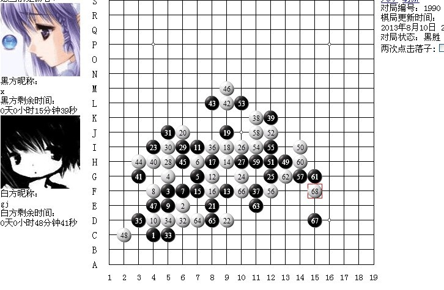
第一次写棋评，所以直接奔主题了
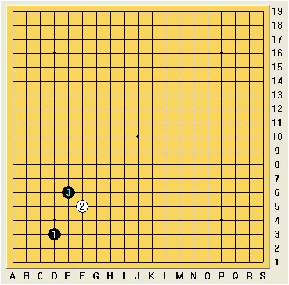
前三手正常开局，应对此黑 3 ，白 4 常见的下法有以下几种，这是一个相对平衡的局面，白 4 之后的分支很多，为节约篇幅，在此就不一一介绍了
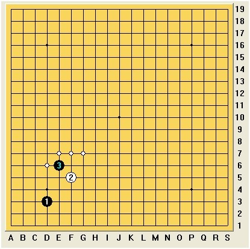
白棋选择了我认为最稳的白 4 ，不仅能有效牵制黑棋边角的攻势，而且拓展了外围，使黑棋陷入两难的境地
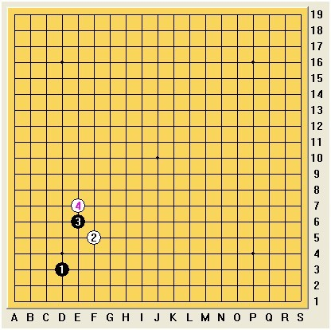
虽然此时黑 5 的选择也挺多
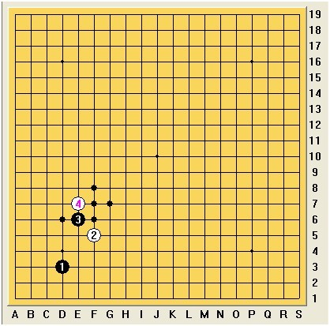
参考图
但正如之前所说，黑棋此时展开攻势白棋是可防住的，例如此例
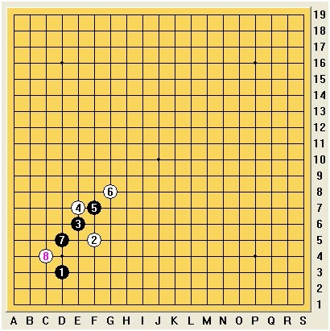
参考图
当然后续不一定是白优，黑棋可能通过攻势，交换资源开辟出新的战场，但也很可能把白棋的子力撞厚，出现局面一边倒的情况。深思熟虑后，黑棋选择了僵持控盘的黑 5
白 6 也紧随其后控盘，继续占据外围优势
此时黑棋若继续选择僵持显然是不明智的，白棋已经牢牢地控制住了外围，逼迫黑棋展开攻势交换资源
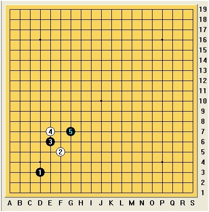
此时黑棋若继续选择僵持显然是不明智的，白棋已经牢牢地控制住了外围，逼迫黑棋展开攻势交换资源
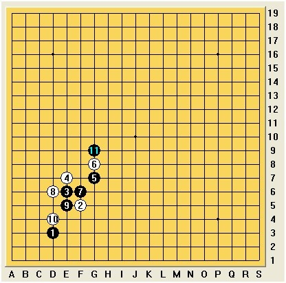
到此黑棋转换局部攻防，黑 11 扳回外势，弃先手
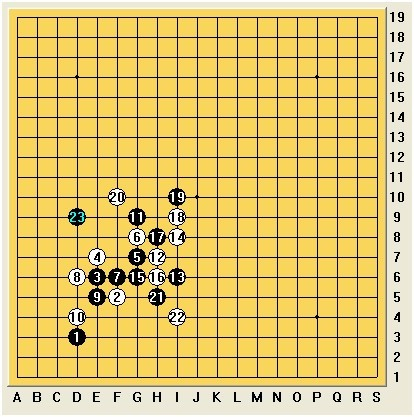
白 12 衔接得当，黑 13 是一手攻守兼具的好棋，有贯通上下之势，而白棋在简单思考后果断选择了交换资源，破坏黑棋的攻势，又弃回先手.
这便是前期精彩的攻防，双方势均力敌，使得局面十分胶着，值得一提的是，白棋对开局似乎十分熟悉，冷静思考，反应灵敏，以至于所剩时间比黑棋整整多出了一个小时
黑棋自感进攻无望，于是黑 19 选择了继续和白棋缠绵，然而白 20 却让黑棋感受到了深深的压力
白 20 也是一手攻守兼具的好棋，充分显露出白棋左上方的优势，而黑棋右下方似乎对白棋构不成威胁，此时黑棋若冒然防守，必然跟不上白棋的进攻节奏，以至于彻底崩盘，黑棋又经过了长时间的思考，下出了黑 21 的适应手，意图彻底转攻为防.
白 22 稳妥的封死了黑棋下端攻势，黑 23 以攻为防，直踩八卦点，自此比赛进入了白棋进攻的节奏，白棋不慌不忙，一步一步地展开攻势，而黑棋则开始了全盘防御，此时黑棋所剩的时间不足 5 分钟.
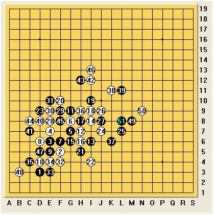
从黑 25 大胆防守外围开始，几乎很多局面都是唯一防（为节省篇幅，有兴趣的同学可以自己拆拆），经过艰难的防守，白棋下出了白 46 的弱手，黑棋抓住了机会，吹响反击的号角，但黑棋所剩时间不多，黑 47 拖加时间.
黑 49 拓展了黑棋右边区域的棋力，白 50 向上跟防，黑 51 更是贯通全场，有破千军之势，白棋无奈以攻作防，破坏黑棋的攻势.
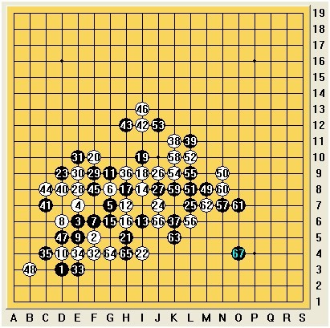
白棋已无力回天，随意下了一手后认输，以下两例为白 68 的胜法参考，
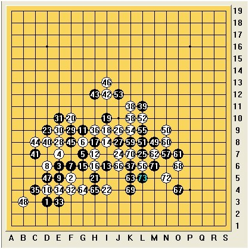
参考图
对局白 68 黑棋简单胜
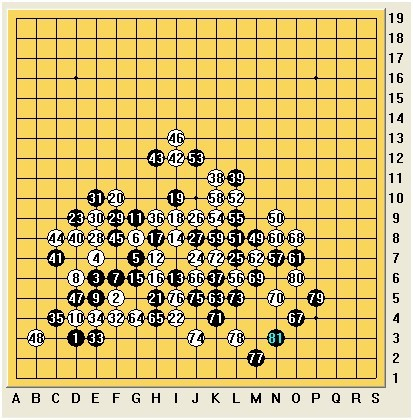
参考图
白 68 双防黑棋一级连攻胜
当然白棋也很可能是想利用时间战术耗完黑棋的时间，因此后面下得有些草率，给了黑棋这次绝地反击的机会，但不得不说，这确实是一盘很精彩的攻防战，将五子棋的攻守之势体现得淋漓尽致。
［此帖子已被 蓝天蓝 在 2013-9-5 13:34:15 编辑过］
［ 釣鱼岛岛主同学于 2013-9-5 16:06:16 时花20金币送鲜花一朵］
［ 釣鱼岛岛主同学于 2013-9-5 16:06:16 时花20金币送鲜花一朵］
［ 釣鱼岛岛主同学于 2013-9-5 16:06:16 时花20金币送鲜花一朵］